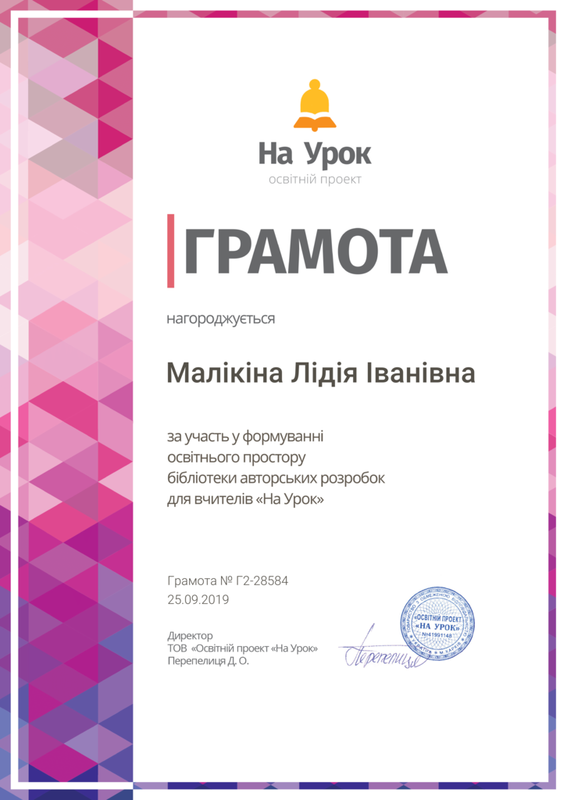

Малікіна Лідія Іванівна
Місце роботи: Охтирська ЗОШ І-ІІІ ступенів №1
Посада: Учитель математики
Освіта: Диплом з відзнакою СДПІ ім. А.С. Макаренка за спеціальністю “математика”
Педагогічний стаж: 38 років
Категорія: Спеціаліст вищої категорії
Дата останньої атестації: 24.03.2015
Педагогічне кредо: "Предмет математики настільки серйозний, що не варто упускати жодної можливості зробити його цікавим" (Блез Паскаль)
Проблема, над якою працює: "Самостійна робота на уроках математики в світлі компетентнісного підходу до вивчення предмету"
